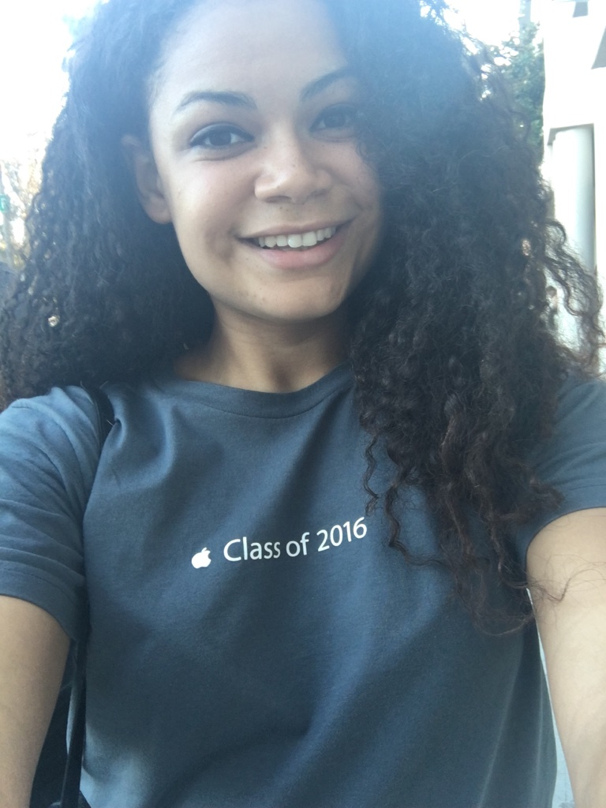

❮
❯
Why I Chose Computer Science
I want to change and close the gap in the Computer Science field between genders and ethnicities. Women, especially African American women, are highly underrepresented in this lucrative and innovative field which I want to change. I hope to one day create some form of technology that will benefit society while casting an ever brighter spotlight on the successful advancements of women and African Americans. I wholeheartedly believe that knowledge is power, ambition is imperative, and the Tapia 2014 Conference will give me unique intellectual tools to broaden my perspective of how change the world around me in ways I never thought possible.
My Hobbies
- Workout
- Bar Hop
- Cook
- Travel/Explore New Areas
- Read the News
My CS Skills
- Python
- Web Design
- Angular JS
- Team Work
- Java
Jobs
- Apple: Click Here
- Discover Financial Services: Click Here
- North Village Group: Click Here
- Spelman College: Click Here
- Jamba Juice: Click Here
About Me

My name is Maurita Ament and I am a senior Computer Science major at Spelman College. I was born in
Pheonix, AZ but grew up in a small suburban town in California named Claremont. I have travelled a lot.
I used to live in Rome, Italy for 3 years. It was there that I found my passion for cooking. I love to cook
meals for my family and friend. My favorite dish to cook currently is Tikka Masala. It is a delicious
Indian cusine. Curry is life.